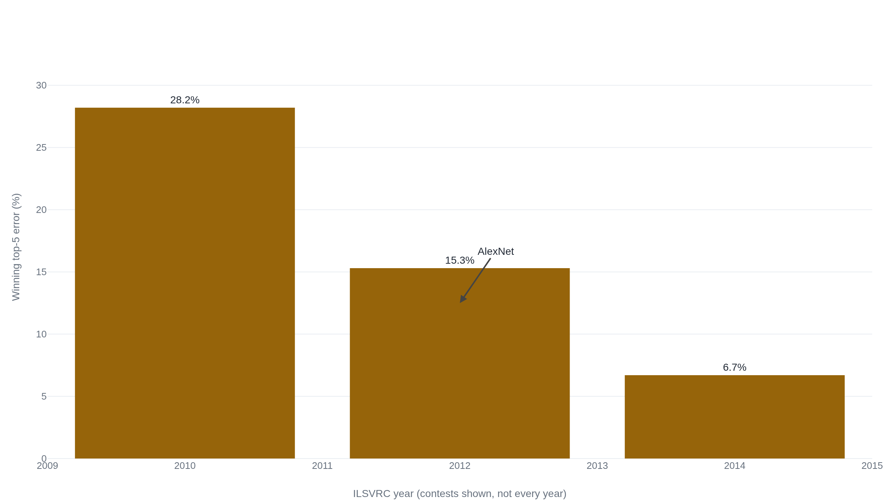

AlexNet won ImageNet 2012 on two gaming GPUs
Krizhevsky, Sutskever, and Hinton beat the runner-up by roughly ten points in 2012, a margin that pushed computer vision toward depth, data, and compute for good.
Why this matters
You have heard that 2012 was the year deep learning arrived, and that a network called AlexNet proved it. The proof is a single paper: eight pages of network diagrams and error tables from three researchers at the University of Toronto. This lesson reads it closely. What was the network? What did it score, and against whom? What hardware did it run on? And of the ideas that made it work, which are still in use fourteen years later? By the end you can separate what the paper demonstrated from the larger claim the field has built on top of it, without docking a point from either.
- 01
- One gradient step drops the loss from 7.0 to 0.225: how a network learns from its own errors, one step at a time.
- 02
- An attention head is a weighted average that computes its own weights: the mechanism behind the Vision Transformer that later challenged convolutional networks.
Ten points clear of the field
In the 2012 ImageNet Large Scale Visual Recognition Challenge, the standard test of whether a program can name what is in a photograph, AlexNet placed first with a top-5 error of 15.3 percent. The second-best entry scored 26.2 percent.1 Top-5 error is a forgiving measure: the program offers five guesses for each image and is charged an error only when the correct label is in none of them. On that measure AlexNet was wrong about one image in seven, the runner-up worse than one in four. A gap that wide, in a contest usually decided in tenths of a percent, is why people remember the year.
The famous 15.3 percent is worth reading closely, because it is not the number the paper spends most of its pages on. That entry was an ensemble: seven copies of the network with their guesses averaged, two of the seven pre-trained on an extra slice of ImageNet released the previous fall.1 The single network the paper actually describes and dissects scored 18.2 percent on the validation set. Averaging five of them, all trained on the provided data, reached 16.4 percent.12 None of this shrinks the achievement. At 18.2 percent the one network still sat about eight points ahead of the 26.2 percent runner-up, and every row in the table beat the field. It is only that the round figure everyone quotes belongs to the stacked version, not the single model.
| Entry | Top-5 error | What it was |
|---|---|---|
| Single net | 18.2% | The one network the paper describes; validation set. |
| Five nets | 16.4% | Five copies averaged, provided data only; validation set. |
| Seven nets | 15.3% | The winning entry; two nets pre-trained on extra 2011 data; test set. |
| Runner-up | 26.2% | Best entry from any other team; test set. |
The paper reports the same pattern a year earlier. On the 2010 data, where organizers still held the test labels, its network reached 17.0 percent top-5 error against 25.7 percent for the best result published before it.1 Whichever entry you count, the win was real and the margin was large.
How eight layers turned pixels into a guess
AlexNet is a convolutional neural network with eight learned layers: five convolutional layers followed by three fully connected ones, about 60 million adjustable numbers in all.1 The word convolutional names the single operation the whole network is built from. Picture a small square stencil, eleven pixels on a side in the first layer, slid across the image one step at a time. At each stop it multiplies the pixels beneath it by a fixed grid of weights and adds the products into one number.1 Slide it everywhere and you get a new, smaller image that lights up wherever the picture matched the stencil's pattern: an edge at a certain angle, a patch of a certain color. The first layer runs 96 such stencils at once. Later layers slide their own stencils over the outputs of earlier ones, so edges compose into textures, textures into parts, and parts into objects. The last layer turns the final numbers into a probability for each of the 1000 categories the contest asks about.
The weights in every stencil are not set by hand. They are learned, nudged toward better values one training step at a time until the network's guesses stop improving. The eight layers stacked this way are what makes the network deep. The paper is unusually direct that the depth is doing the work: each convolutional layer holds less than one percent of the network's weights, yet removing any single one of them measurably worsens the result.1
The paper's central claim is about depth, not any one trick. Given enough labeled images and enough compute to train on them, stacking more layers keeps improving what the network can recognize, and that claim, unlike most of the techniques around it, is still standing.1
The constraints did the designing
Read the paper as a list of engineering decisions and a pattern appears: nearly every one answers a limit the authors could not remove. The two hardest limits were the size of the graphics cards and the size of the dataset.
The network was too big for the memory on one card. So the authors split it across two NVIDIA GTX 580s, the graphics cards sold for gaming PCs that year, with three gigabytes of memory each, and let the halves exchange information only at certain layers.1 The two-GPU split was not a theory about how vision should work. It was a way to fit a large network into six gigabytes total. Training the whole thing took five to six days.1 To make training that fast, they replaced the usual smooth activation function with the rectified linear unit, which passes positive values straight through and zeroes out the rest. On a test network it reached a given training error about six times faster than the standard choice.1 Two smaller adjustments, local response normalization and overlapping pooling, each shaved off another point or so.1
The dataset was the other hard limit, and it created the opposite problem. A network with 60 million weights can memorize its training images outright, learning the specific pictures rather than what a dog looks like, and then fail on anything new. That failure is overfitting, and two of the paper's techniques exist only to prevent it.1 The first, data augmentation, manufactures fresh training images from the ones on hand by cropping, flipping, and shifting the colors. That enlarged the effective training set by a factor of more than two thousand.1 The second, dropout, randomly switches off half the neurons in the large final layers on every pass, so no neuron can lean on any particular other one. Each must instead learn a feature that stands on its own. Dropout roughly doubled the number of passes needed to converge, and the authors paid that cost on purpose.1
AlexNet stood on ImageNet and DanNet
None of this would have made a headline without the thing the network trained on. ImageNet was a database of labeled photographs assembled at Princeton starting in 2009, sorted into categories by hand through Amazon's Mechanical Turk at a reported labeling precision of 99.7 percent.3 The contest subset AlexNet used held about 1.2 million training images across 1000 categories.2 Collecting and labeling images at that scale was itself the precondition the result rested on: a network that learns from examples is worth nothing without more than a million correct examples to learn from. The authors say as much, opening the paper by crediting the dataset.
The method was not new in 2012 either. Convolutional networks go back to the 1980s, and, more pointedly, deep convolutional networks trained on graphics cards had already been winning vision contests. A group at the Swiss lab IDSIA, led by Dan Ciresan and later nicknamed DanNet, used GPU-trained deep networks to reach 0.23 percent error on handwritten digits. On a traffic-sign benchmark the same approach beat people outright, making half as many mistakes as the human entrants.4 That work was published months before AlexNet, and AlexNet cites it.1 What 2012 changed was not the existence of deep networks on graphics cards but the arena. ImageNet's thousand categories and million images were a far harder test than digits or traffic signs, and winning there is what drew the industry in.
Read this way, AlexNet was less an invention than a convergence. A retrospective from the Computer History Museum names three ingredients that had to arrive together: labeled data at ImageNet's scale, graphics cards fast enough to train on it, and the deep-network methods themselves. "Each of these needed the other," it says.5 AlexNet was the first result to hold all three at once on a problem the whole field was watching.
The bet on scale outlived its techniques
In the years after, most of AlexNet's specific techniques were replaced, and it is worth seeing who replaced which one. Local response normalization, one of its error-shaving tricks, was retired outright. The 2015 batch normalization paper, building a network without it, reported that "with Batch Normalization it is not necessary."6 The two-GPU split vanished as soon as card memory grew enough to hold a network on one chip. Even the convolutional design at the center of the paper was later challenged. The 2021 Vision Transformer drops convolution entirely. Pre-trained on enough data, it matched and passed the best convolutional networks on ImageNet, and its authors summed the lesson up as "large scale training trumps inductive bias."7 No single document overturned AlexNet. Three separate ones each retired a different part of it.
What survived was the bet underneath those parts: that piling on depth, data, and compute would keep paying off. It did. The winning error on the same contest kept falling after 2012, from AlexNet's 15.3 percent to 6.7 percent by 2014, a more-than-fourfold reduction across the challenge's first five years.2

That falling number carries its own caution. In 2019 researchers built a fresh ImageNet test set, drawn the same way as the original, and re-scored the established models on it. They lost 11 to 14 points of accuracy.8 The 2012 result does not lean on any of this. AlexNet's margin was far too large to be a test-set artifact. But the leaderboard it started is worth reading with the same care the paper itself earns.
The takeaway
So what did AlexNet prove? Something precise: that a deep convolutional network, trained on ImageNet's labeled images across two consumer graphics cards, could win the 2012 vision contest by a margin wider than any tweak to the old hand-built methods had ever produced. That result was real, and it was large. What it did not do was invent the pieces it used. The network form, the graphics-card training, even superhuman accuracy on a vision task all came earlier. ImageNet's labeled scale was built by someone else. The contest kept improving for years afterward. AlexNet's achievement was to be the first to bring depth, data, and compute together on a problem the whole field was watching, and to win so clearly that the field reorganized around it. When you next hear that 2012 was the year deep learning was proved, you can hold both halves at once. The paper earned its place, and it earned it by confirming a direction rather than opening one out of nothing.
- 01
- ImageNet Classification with Deep Convolutional Neural Networks: the eight pages themselves, short and readable.
- 02
- CHM Releases AlexNet Source Code: the win seen in hindsight, with the original code now public.
Sources
- NeurIPS 2012 · Krizhevsky, Sutskever & Hinton, ImageNet Classification with Deep Convolutional Neural Networks
- Russakovsky et al. · ImageNet Large Scale Visual Recognition Challenge (2015)
- CVPR 2009 · Deng et al., ImageNet: A Large-Scale Hierarchical Image Database
- Ciresan, Meier & Schmidhuber · Multi-column Deep Neural Networks for Image Classification (2012)
- Computer History Museum · Hsu, CHM Releases AlexNet Source Code (2025)
- Ioffe & Szegedy · Batch Normalization (2015)
- Dosovitskiy et al. · An Image Is Worth 16x16 Words: Transformers for Image Recognition at Scale (2021)
- Recht et al. · Do ImageNet Classifiers Generalize to ImageNet? (2019)